With the recent midterm elections, the controversial topic of climate change was once again being discussed in the open. Just here in California, there were several propositions on the ballot relating to climate change. However, it’s not always easy to understand the general public’s view of climate change. Depending on what news source you follow, one can get very different impressions of the importance of climate change and society’s general attitude towards the subject.
In order to better understand the general view of climate change, I thought to look to Twitter as a good place to measure the public sentiment on Climate Change.
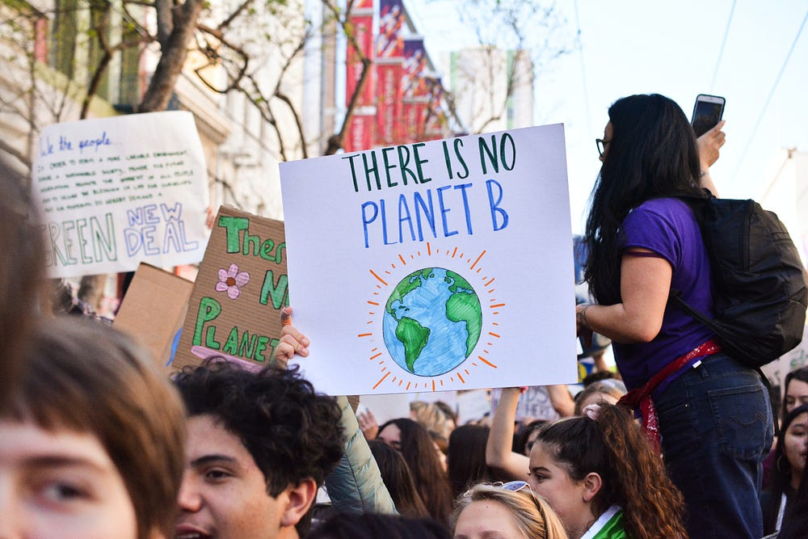
Gathering Data
I’ve tried scraping tweets off of Twitter in the past, but I’ve always run into problems of some sort. Most notably I’ve tried using the popular library tweepy, and I’ve also tried using Twitter’s official API. Overall, I’ve found both of these techniques to be a bit limiting, as both limit the amount of tweets you’re able to scrape. I recently discovered snscrape, an open-source library that allows you to scrape a variety of social networking sites. More info about the library can be found here.
Overall, I found snscrape to be extremely easy to use, and I would recommend it to any looking to do a similar project.
Choosing a Data Size
Because snscrape doesn’t limit the number of tweets you can scrape, I thought it would be interesting to push the limits with how many tweets I could scrape off of Twitter. I first started by scraping 100 tweets, and I proceeded to increase the scraping quantity by a factor of ten.
Ultimately, I decided to stop at 100,000 tweets because the run time started to get pretty lengthy, and this is more than enough tweets to get a general understanding of Twitter’s sentiment.
Here’s the code I used to scrape the tweets.
import snscrape.modules.twitter as sntwitter
import pandas as pd# declare variables and query
tweets_list = []
tweet_count = 100000
query = "Climate Change since:2021-01-01 until:2022-11-09" # use TwitterSearchScraper to scrape data and append tweets to list
for i,tweet in enumerate(sntwitter.TwitterSearchScraper(query).get_items()):
if i>tweet_count:
break
tweets_list.append([tweet.date, tweet.id, tweet.content, tweet.user.username])
# Creating a dataframe from the tweets list above
tweets_df = pd.DataFrame(tweets_list, columns=['Datetime', 'Tweet Id', 'Text', 'Username'])The query above searches Twitter for the keyword “Climate Change” and returns the specified amount of tweets. Based off of the parameters I set, the scraper would scrape tweets from January 1, 2021, until 11:59 p.m. of November 8, 2022. This is helpful as we’ll be able to capture tweets from the 2022 Midterm Election. Tweets were returned in order of most recent.
Data Processing
After scraping 100,000 tweets with the keyword “Climate Change”, this is what my data set looks like. The features include:
- Datetime (The exact timestamp the tweet was posted)
- Tweet Id (A unique identification number for a specific tweet)
- Text (The text of the tweet)
- Username (The official Twitter username that posted the tweet)
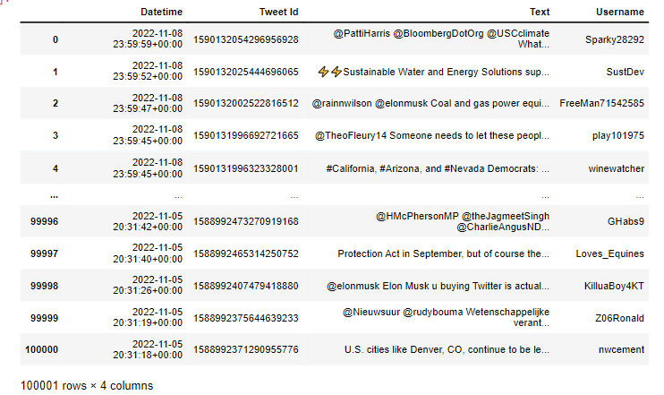
Cleaning Text Data
As we can see above the dataframe contains 100,001 rows and 4 columns, thus we’ve successfully scraped over 100,000 tweets.
However, because these strings were taken off of Twitter, they contain emojis, URLs and other types of data that will most likely affect the efficacy of our analysis.
Because the tweets are a string type, I decided that the easiest way to accomplish what I wanted would be to use regular expressions. I managed to write this function below with the help of some documentation which removes emojis, @mentions, hashtags, and URLs.
def clean_string(a):
# remove emoji's
emoji_pattern = re.compile("["
u"\U0001F600-\U0001F64F" # emoticons
u"\U0001F300-\U0001F5FF" # symbols & pictographs
u"\U0001F680-\U0001F6FF" # transport & map symbols
u"\U0001F1E0-\U0001F1FF" # flags (iOS)
u"\U00002702-\U000027B0"
u"\U000024C2-\U0001F251"
"]+", flags=re.UNICODE)
a = emoji_pattern.sub(r'', a) # remove @ symbols and hashtags
re_list = ['@[A-Za-z0–9_]+', '#']
combined_re = re.compile( '|'.join( re_list) )
a = re.sub(combined_re,'',a) # remove urls from text
pattern = re.compile(r'(https?://)?(www\.)?(\w+\.)?(\w+)(\.\w+)(/.+)?')
a = re.sub(pattern,'',a)
output = a
return outputString before processing
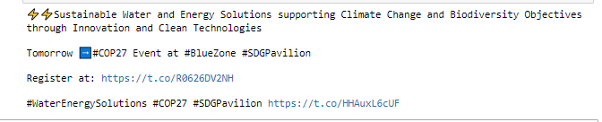
After processing string
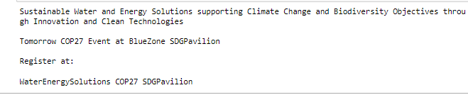
As we can see the string is being processed correctly, and we’ve successfully removed the undesirable elements.
Now I’m going to run the function on all elements in df[‘Text’].
length = len(df)
for i in range(length):
df['Text'][i] = clean_string(df.iloc[i]['Text'])Due to the size of this data, one thing that I’m worried about in the future is run time. However, this run wasn’t too bad, and I was able to transform all of the text elements in a runtime of about five minutes.
Exploratory Data Analysis
Now that we’ve removed undesirable text elements from our data we can begin to explore the tweets.
I’d like to find the most common words in the data to understand what words are most frequently associated with “Climate Change” on Twitter.
Before doing so, we need to do a little bit more processing on the text data. We will use WordPunctTokenizer from the NLTK library to tokenize each tweet. Tokenization is simply the process of separating a text string into individual words. We will then convert each word to lowercase and save the words in one large string.
We can accomplish this data processing with the code below.
from nltk.tokenize import WordPunctTokenizer
tk = WordPunctTokenizer()def tokenize_and_process(d):
d = str(d)
lower_case = d.lower()
words = tk.tokenize(lower_case)
result_words = [x for x in words if len(x) > 2]
return (" ".join(result_words)).strip()Now we will run this function on all 100,000 tweets in our data set.
processed_tweets = []
print ('Processsing and tokenizing tweets')
for i in range(100000):
if i % 5000 == 0:
print("Tweets {} of {} have been processed".format(i, 100000))
processed_tweets.append(tokenize_and_process(df.Text[i]))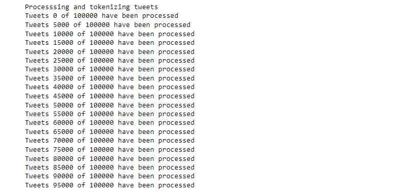
As we can see we’ve successfully processed 100,000 of our tweets
Next, we will save all of our processed tweets into one giant string.
string = pd.Series(processed_tweets).str.cat(sep=' ')Our output string
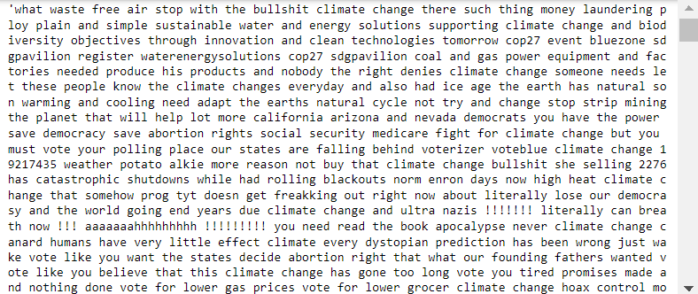
Generating Word Cloud
Now we will generate a word cloud based on the string we’ve created above.
Before generating the word cloud. We need to filter out Stop Words. Stop words are words in Natural Language Processing that we deem will not provide us with any semantic insight.
The Wordcloud module STOPWORDS comes with a preset list of stop words. We will also add in a few additional stop words to filter out unnecessary climate change-related words.
from wordcloud import STOPWORDS
stopwords = set(STOPWORDS)
custom_stopwords = ['climate', 'climate change', 'change', 'climatechange']
stopwords.update(custom_stopwords)Now that we’ve accounted for stop words we can generate a word cloud with the 200 most common words from our 100,000 scraped tweets
from wordcloud import WordCloud
import matplotlib.pyplot as pltwordcloud = WordCloud(width=1600, stopwords=stopwords,height=800,max_font_size=200,max_words=500,collocations=False, background_color='black').generate(string)
plt.figure(figsize=(40,30))
plt.imshow(wordcloud, interpolation="bilinear")
plt.axis("off")
plt.show()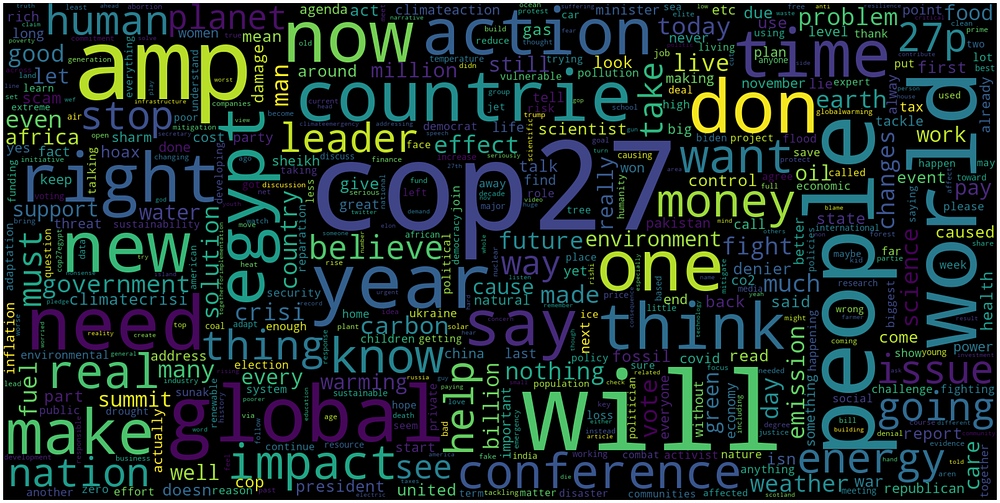
Tweet Classification with BERT
BERT which stands for Bidirectional Encoder Representations from Transformers is an open source machine learning framework developed by Google in 2018 used for advanced Natural Language Processing tasks. The model was trained on English Wikipedia (2,500M words) and BookCorpus (800M words). The key differentiator in the BERT model is its Bidirectionality or rather non-directionality. Rather than reading sentences right to left, the model is able to read sentences all at once. I won’t get too deep into the workings of BERT but more can be read about it here.
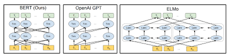
I am aware that Open AI’s GPT3 performs better than BERT at text classification, but due to limited access, I decided to use BERT for this classification project.
Implementation of BERT Base Model
# Import necessary libraries
from transformers import AutoTokenizer, AutoModelForSequenceClassification
import torch
import requests
import re# Instantiate Model
tokenizer = AutoTokenizer.from_pretrained('nlptown/bert-base-multilingual-uncased-sentiment')model = AutoModelForSequenceClassification.from_pretrained('nlptown/bert-base-multilingual-uncased-sentiment')Next, let’s create a function to use the model to predict sentiment.
def sentiment_score(tweet):
tweet = str(tweet)
tokens = tokenizer.encode(tweet, return_tensors='pt')
result = model(tokens)
return int(torch.argmax(result.logits))+1In this case:
- 1 is very negative
- 2 is negative
- 3 is neutral
- 4 is positive
- 5 is very positive
Testing sentiment_score
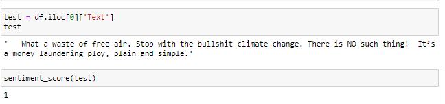
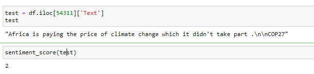
As we can see the function does a reasonably good job of classifying the sentiment of the tweets.
Passing all tweets to BERT
Now we need to pass every tweet in our 100,000 tweet sample into the model.
length = len(df)
for i in range(length):
if i % 100 == 0:
print(i, ' tweets have been processed')
df['sentiment'][i] = sentiment_score(df.iloc[i]['Text'])I did this with the for loop above. The model ended up taking much longer to run than I expected. To iterate over all 100,000 tweets it took a little over four hours to run.
Results
After running BERT on all 100,000 tweets, the distribution of sentiment classification was as follows.
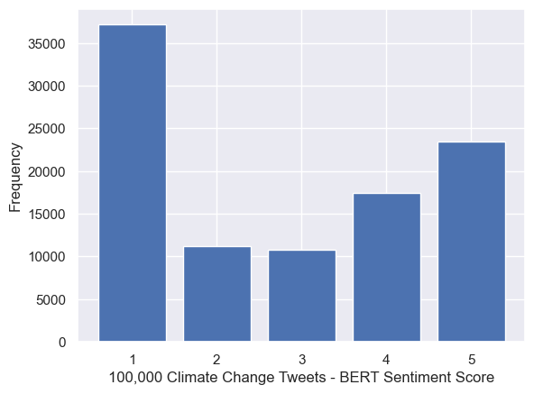
As we can see the distribution of sentiment definitely skews towards negative tweets. After 1, the most common sentiment was a 5. This confirmed my intuition that Twitter fosters an environment where extreme opinions are more prevalent, whether they are negative or positive.
Statistics
- Average: 2.786
- Median: 3
- Mode: 1
- Standard Deviation: 1.63
Of all the 100,000 tweets the average was 2.786, meaning that the average tweet on Twitter about climate change is slightly more negative than neutral.
Given the data, it’s clear that Twitter is a place that fosters extreme opinions. Over 60% of the tweets were classified as either a 1 or a 5. Thus, Twitter is clearly a place that is not ideal for educating oneself about important issues such as climate change.
References
- https://medium.com/dataseries/how-to-scrape-millions-of-tweets-using-snscrape-195ee3594721
- https://pypi.org/project/snscrape/
- https://medium.com/codex/making-wordcloud-of-tweets-using-python-ca114b7a4ef4
- https://gist.github.com/slowkow/7a7f61f495e3dbb7e3d767f97bd7304b#file-remove-emoji-py-L28
- https://www.wikiwand.com/en/Stop_words
- https://towardsdatascience.com/sentiment-analysis-in-10-minutes-with-bert-and-hugging-face-294e8a04b671
- https://github.com/SpencerPao/Natural-Language-Processing/blob/main/BERT/BERT_Code_Implementation.ipynb
- https://towardsdatascience.com/bert-explained-state-of-the-art-language-model-for-nlp-f8b21a9b6270